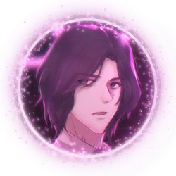

Heya! This website was entirely written in HTML, CSS and JS by some tired year old girl and who only functions through coffee. I've created this website since I was inspired by those Carrd profiles and decided to make my own! My hobby merely consists of me programming, building websites, drawing or gaming... there isn't much to say about myself other than my personality revolving around programming and most of the video game series I am into. I literally spend most of my time contemplating life (jk). A little about me is that I am a wannabe game dev and a web dev hobbyist but I am leaning more into full stack web development. Tbh idk what im doing with my life by the way i lov coffe
Stuff I like
Gaming
Making random websites
Coffee
Interests
NieR
Final Fantasy
Devil May Cry
Infinity Nikki
Emacs
is
a
superior
text editor